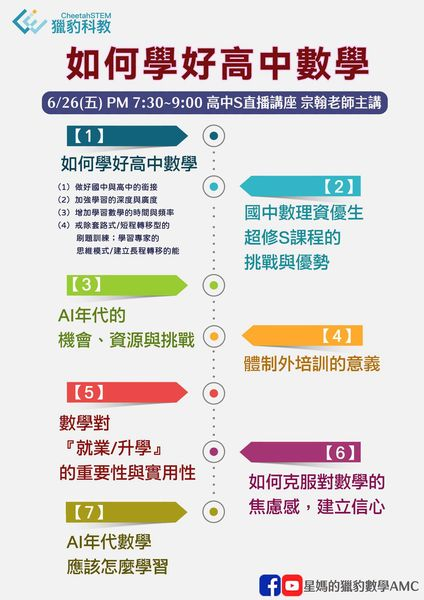
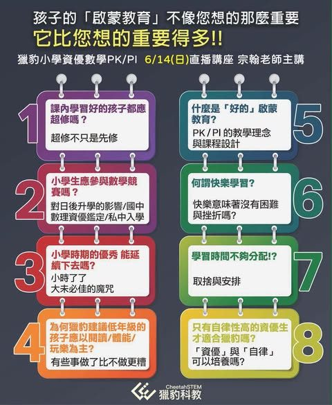
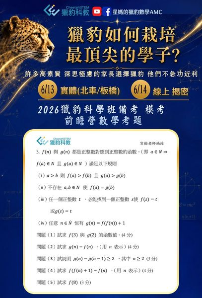
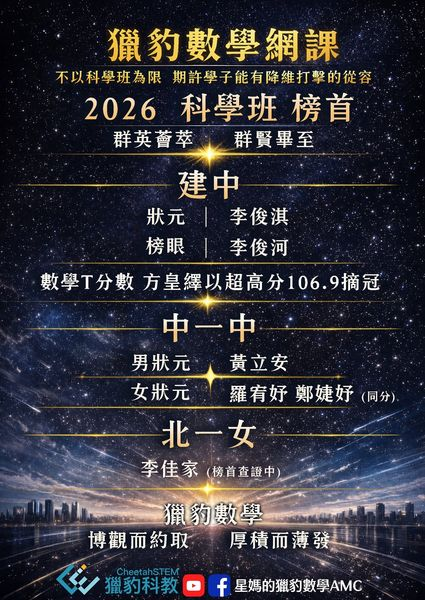
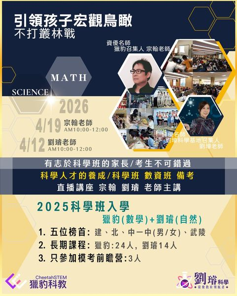

超修生 資優生 都需要一個優質的網路課程
▶️6/26(五) PM 7:30~9:00 高中S直播講座 宗翰老師主講 相較於國中，高中數學不但在知識量大幅地增加，內容更抽象、觀念更深入且題型變化多端。
直播講座學測2026最新消息
閱讀全文直播講座、活動公告與重要更新，都集中整理在這裡。

▶️6/26(五) PM 7:30~9:00 高中S直播講座 宗翰老師主講 相較於國中，高中數學不但在知識量大幅地增加，內容更抽象、觀念更深入且題型變化多端。
▶️6/26(五) PM 7:30~9:00 高中S直播講座 宗翰老師主講 •獵豹加深、加廣的「超額訓練」，讓目標頂大「醫電園」的你 即使在難度最大的年度 仍有強大穩定的表現‼️

【明天6/14(日) 上午小學P/下午國中J】直播講座-獵豹關心你所關心的議題 🌟6/14(日) 宗翰老師主講 🔹小學P：AM10:30~12:00
當AI, 去年拿下IMO金牌❗️ 今年更在懸疑數學界80年的Paul Erdős「單位距離猜想」取得重大突破‼️ 我們卻還在用「刷題、套路、記憶題型」訓練孩子數學⁉️
👍6/14(日)PM2:00-4:00 宗翰老師主講 他們幫你考上明星高中 獵豹讓你持續領先 他們幫你考上台大 獵豹讓你得書卷獎 超修生/資優生 的最優選擇‼️

•為何獵豹能栽培許多最頂尖的學子 ⁉️ •獵豹小學教材 超綱嗎⁉️太難了嗎⁉️ •AI年代 應該如何教育孩子⁉️應該建立什麼能力⁉️應該如何使用AI輔助學習⁉️
歡迎參加 近期獵豹講座: 🚩歡迎參加! 麻煩家長 👍小學家長[實體]講座: 5/23(六) AM10:00~12:30 台北市許昌街17號11樓(壽德大樓)
給 超修生、高一新鮮人的數學直播公開課～宗翰老師談「如何學好高中數學」;獵豹精銳名師 上杰老師【 解題模式/組合學 計數方法】#公開課報名方式見文末或底下留言

『2026 獵豹 科學班／數資班入學考試備考直播講座』 2026年4月19日（日）上午10:00-12:00 數學科 宗翰老師主講 🏆數學T分數 方皇繹以 超高分106.9摘冠

2026年4月19日（日）上午10:00-12:00 星期日早上10:00，將由宗翰老師在直播中和大家分享數學科的學習和備考方式。 數學科作為K12學科中除了國文外，唯一從1年級到12年級都需…
2026年4月19日（日）上午10:00-12:00 數學科 宗翰老師 形式｜ 線上直播 AI年代 改變孩子一生的數學課程 全台最強【科學班備考】課程